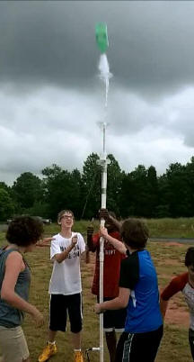

Community School of Davidson strives to create an environment where the individual needs of students are met and students are encouraged to achieve their full potential as life-long learners. This site contains videos and Tracker video models for teaching middle school science.
The Tracker video analysis and modeling tool enables students to create particle models based on kinematics or Newton's laws and to compare the model’s behavior directly with that of real-world objects captured on video. Tracker's model builder provides an introduction to dynamic modeling by making it easy to define and modify force expressions, parameter values, and initial conditions while hiding the numerical algorithm details. Because Tracker particle models synchronize with and draw themselves right on the video, students can test their models experimentally by direct visual inspection.